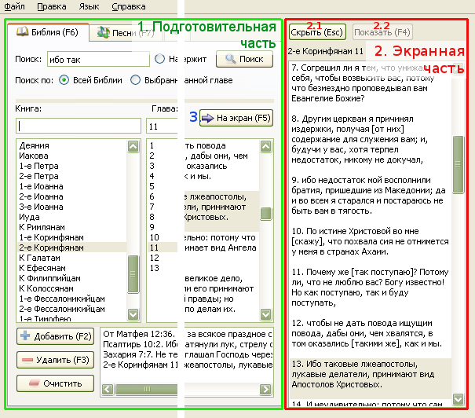

2.1 Вывод на экран

Интерфейс Софт Проектора состоит из трех важнейших элементов: подготовительная часть, окно вывода на экран
и кнопка "На экран".
1. Подготовительная часть:
В этой части находятся тексты из Библии, песни и все остальное, что нужно вывести на экран.
Все то, что готовится в этой части, не влияет на то что показано на экране до тех пор, пока не нажата кнопка
"На экран".
2. Окно вывода на экран:
После нажатия на кнопку "На экран", выбранный текст Библии или песня
появляется в списке показа.
При нажатой кнопке "Показать", можно мышью выбирать из списка в окне показа,
при этом выбранный текст будет показан на экране. Двойной щелчок по окну показа
активирует кнопку "Показать" и отсылает выбранный текст на экран.
При нажатии на кнопку "Скрыть" , кнопка "Показать" деактивируется и с экрана исчезает вся информация. При этом фоновый рисунок переходит в заставку.
Кнопка "Показать" активизируется автоматически при нажатии на кнопку "На экран". При нажатии на кнопку "Показать" , деактивизируется кнопка "Скрыть" . При этом заставка переходит в фоновый рисунок, а выбранный текст заносится в список/активируется в списке показа.
3. Кнопка "На экран" :
Кнопка "На экран" выполняет одинаковую функцию во всех закладках, т.е. отсылает приготовленные стихи
Библии / песни / тексты и т.д. на экран. При ее нажатии, список показа заполняется выбранными текстами,
активируется кнопка "Показать" и на экране появляется выбранный текст.